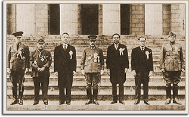

|
j
a v a s c r i p t |
November 7, 1943
Tribune: "Asians Voice Mutual Aims in Congress Declaration." Their manifesto accuses Britain and America of indulging in "insatiable aggression and exploitation."

Greater East Asia Conference
"Laurel urges all Asians to aid Japan" — reads like Japanese propaganda. "Asians ready to crush foe moves — Tojo." His fantasy is that his East Asian puppets will protect Japan. "Six more enemy warships sunk." Four scout planes and fourteen warplanes sink two carriers, two large cruisers, and two destroyers, while losing only three planes. E.M. in Our Today: Since June 30 when the enemy started landing operations on Rendova Island, the Anglo-Americans have lost two aircraft carriers, 26 cruisers, 21 destroyers, 67 transports, 22 submarines, and 113 smaller vessels. These figures do not include 12 cruisers, 17 destroyers, 46 transports and 16 other vessels damaged.... Are a few small Islands in the Solomons worth the price?" Santo Tomas internees are hard at work unloading truckloads of U.S. Red Cross parcels that arrived a couple of days ago on the exchange ship Teia Maru. Marked for Christmas distribution only, they are being stored in Menzi and E. A. Keller bodegas. This time there's method and supervision — the Japanese might take a few, but most should get through. |
|
|
|
|